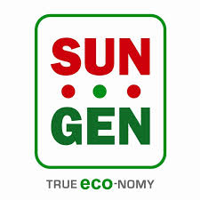

Sungen produtos de engenharia incluem uma nova geração de filmes amorfos módulos fotovoltaicos de silício finas eo Mono tradicional e módulos fotovoltaicos de silício policristalino.
Apoiado pela Singapore Exchange-listed Anwell Group, Sungen foi fundada Maio de 2008 em Hong Kong, China. Sungen tem investido na cidade de Anyang Henan, China um fab solares internacionalmente certificada para fornecer aos seus clientes com qualidade de produção de 1.100 milímetros x 1.400 milímetros fator de forma de silício amorfo (a-Si) módulos fotovoltaicos de filme fino (PV), a uma capacidade de produção anual de 50 MW em 2010 e 150 MW em 2011.
Sungen escritórios regionais na América do Norte, América do Sul, Europa, Oriente Médio e Ásia prestação de serviços de pós-vendas para suporte completo ao cliente.
Combinando escala de baixo custo e métodos de produção sustentáveis, Sungen é o seu parceiro confiável para o desempenho de qualidade e valor máximo solar.
Saiba Mais >>
Sungen
Sungen desenvolve e fabrica tecnologia de sistema fotovoltaico pronta para atender as necessidades críticas do mercado mundial de energia solar.Sungen produtos de engenharia incluem uma nova geração de filmes amorfos módulos fotovoltaicos de silício finas eo Mono tradicional e módulos fotovoltaicos de silício policristalino.
Apoiado pela Singapore Exchange-listed Anwell Group, Sungen foi fundada Maio de 2008 em Hong Kong, China. Sungen tem investido na cidade de Anyang Henan, China um fab solares internacionalmente certificada para fornecer aos seus clientes com qualidade de produção de 1.100 milímetros x 1.400 milímetros fator de forma de silício amorfo (a-Si) módulos fotovoltaicos de filme fino (PV), a uma capacidade de produção anual de 50 MW em 2010 e 150 MW em 2011.
Sungen escritórios regionais na América do Norte, América do Sul, Europa, Oriente Médio e Ásia prestação de serviços de pós-vendas para suporte completo ao cliente.
Combinando escala de baixo custo e métodos de produção sustentáveis, Sungen é o seu parceiro confiável para o desempenho de qualidade e valor máximo solar.
Saiba Mais >>